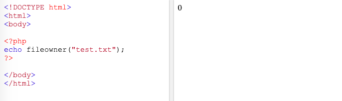

fopen( ) mode w digunakan hanya untuk melakukan write, ketika file sudah ada maka dapat menghapus file tersebut.
Sedangkan jika file tidak ada maka dapat membuat file baru dan pointer dimulai di awal file
<?php
$myfile = fopen("fileBaru.txt", "w") or die("Unable to open file!");
$text = "Kelompok 6";
fwrite($myfile, $text);
fclose($myfile);
?>
Mode a
fopen( ) mode a digunakan hanya untuk melakukan write, data pada file yang sudah ada ini akan dipertahankan
dan jika file tidak ada maka dapat membuat file baru dan pointer dimulai di akhir file
<?php
$myfile = fopen("fileBaru.txt", "a") or die("Unable to open file!");
$txt = "\nKelas PAW-D\n";
fwrite($myfile, $txt);
fclose($myfile);
?>
Mode x
fopen( ) mode x digunakan hanya untuk melakukan write, jika file sudah ada maka returnsnya akan FALSE atau error
<?php
$myfile = fopen("newFile.txt", "x") or die("Unable to open file!");
$text = "Review file handling\n";
fwrite($myfile, $text);
fclose($myfile);
?>
Mode r+
fopen( ) mode r+ digunakan untuk dapat melakukan read atau write, pointer berada di awal file
<?php
$myfile = fopen("fileBaru.txt", "r+") or die("Unable to open file!");
$text = "Fairuz Nandhita\n";
fwrite($myfile, $text);
echo fread($myfile, filesize("fileBaru.txt"));
fclose($myfile);
?>
Mode w+
fopen( ) mode w+ digunakan untuk dapat melakukan read atau write, ketika file sudah ada dapat menghapus file tersebut jika file tidak ada
maka dibuat file baru dan pointer dimulai di awal file
<?php
$myfile = fopen("fileBaru.txt", "w+") or die("Unable to open file!");
$text = "Teknologi Informasi\n";
fwrite($myfile, $text);
echo fread($myfile, filesize("fileBaru.txt"));
fclose($myfile);
?>
Mode a+
fopen( ) mode a+ digunakan untuk dapat melakukan read atau write, data pada file yang sudah ada ini akan dipertahankan
dan jika file tidak ada maka dibuat file baru dan pointer dimulai di akhir file
<?php
$myfile = fopen("fileBaru.txt", "a+") or die("Unable to open file!");
$txt = "Universitas Brawijaya\n";
fwrite($myfile, $txt);
echo fread($myfile, filesize("fileBaru.txt"));
fclose($myfile);
?>
Mode x+
fopen( ) mode x+ digunakan untuk dapat melakukan read atau write, jika file sudah ada maka returnnya akan FALSE atau error
<?php
$myfile = fopen("xFile.txt", "x+") or die("Unable to open file!");
$text = "Review file handling\n";
fwrite($myfile, $text);
fclose($myfile);
?>
fread()
fread() function digunakan untuk membaca konten dari sebuah file yang terbuka.
Menerima dua parameter yang pertama berisi nama file yang dibaca dan parameter kedua menentukan byte maksimum untuk dibaca.
Syntax:
$file_handle = fopen('article.txt', 'r');
$contents = fread($file_handle, 1024)
filesize()
Fungsi filesize() untuk mengembalikan ukuran file.
Syntax:
$file_name = ‘article.txt’;
$file_handle = fopen($file_name, ‘r’);
$file_size = filesize($file_name);
$contents = fread($file_handle, $file_size);
file_exists( )
Fungsi file_exists( ) untuk melakukan pengecekan apakah file tersebut ada atau mengecek apakah file tersebut berada pada direktori
<?php
$file_name = 'article.txt';
if (file_exists($file_name)) {
$file_handle = fopen($file_name, 'r');
$file_size = filesize($file_name);
$contents = fread($file_handle, $file_size);
echo $contents;
} else {
echo 'File not found';
}
?>
fwrite()
Penggunaan fwrite() digunakan untuk menulis string ke file
Fungsi fwrite() dapat digunakan juga untuk menulis ke file yang terbuka
Syntax:
$file_handle = fopen(‘article.txt’, ‘r+’);
fwrite($file_handle, ‘Enam’);
$file_handle = fopen(‘article.txt’, ‘a’);
fwrite($file_handle, ‘, satu jiwa’);
fclose()
fclose() function digunakan untuk menutup pointer file yang terbuka. Untuk menggunakan fclose(), file harus sudah dibuka oleh fungsi fopen() atau fsockopen().
Syntax:
fclose(filepointer);
Parameter filepointer dibutuhkan untuk menentukan file yang ingin ditutup.
fileatime()
Fungsi filemtime() mengembalikan waktu akses terakhir dari file yang ditentukan.
Syntax: filemtime(filename). Parameter filemtime dibutuhkan untuk menentukan jalur ke file yang akan diperiksa.
<?php
echo fileatime("webdictionary.txt");
echo "<br>";
echo "Last access: ".date("F d Y H:i:s.", fileatime("webdictionary.txt"));
?>
Output:
1664455310
Last access: September 29 2022 12:41:50.
filemtime()
Fungsi filemtime() mengembalikan terakhir kali konten file diubah.
Catatan: Hasil dari fungsi ini di-cache. Gunakan clearstatcache() untuk menghapus cache.
Syntax: filemtime(filename). Parameter filemtime dibutuhkan untuk menentukan jalur ke file yang akan diperiksa.
<?php
echo filemtime("webdictionary.txt");
echo "<br>";
echo "Content last changed: ".date("F d Y H:i:s.", filemtime("webdictionary.txt"));
?>
Output:
1540211788
Content last changed: October 22 2018 12:36:28.

fileowner()
Syntax: fileowner(filename)
fungsi fileowner() mengembalikan ID pengguna (pemilik) dari file yang ditentukan.
Tip: Gunakan posix_getpwuid() untuk mengonversi ID pengguna menjadi nama pengguna.
<?php
echo fileowner("test.txt");
?>
Output: 0
fileperms()
Syntax: fileperms(filename)
Fungsi fileperms() mengembalikan informasi izin untuk file.